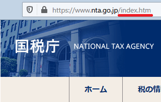

index.htmlとトップページの関係
通常、サイトのトップページはスラッシュ「/」の形で終了しています。
例えば、当ホームページの場合はこのようなURLです。
https://www.homepage-tukurikata.com/
けれども、これは「index.html」が省略された形のURLのため、トップページにアクセスした際には、フォルダ内に設置したindex.htmlファイルの内容が表示されることになります。
https://www.homepage-tukurikata.com/index.html
ブラウザがトップページにアクセスした際、「index.html」を探して表示しますが、それがなかった場合は「index.htm」や「index.php」などのファイルを探して表示されることになります。
公官庁のような昔からある古いホームページの場合は「index.htm」で作成されているケースも多いですが、一般的には「index.html」で作成することをおすすめします。

もしこれらのファイルがなければ、トップページにアクセスしてもサイトが表示されないため、まずは「index.html」のファイルをルートディレクトリに作成しておきましょう。
トップページのデフォルトURLの４パターン
このデフォルトのURLを「index.htmlあり」にするのか、なしの「スラッシュの形」にするのかの違いによって、検索エンジン対策で影響の出る可能性があります。
両方とも同じ内容が表示されるため、人間の目からするとどちらでもかまいませんが、検索エンジンはそれぞれを別々のページと認識することがあります。
「wwwあり・なし」の設定についてもそうですが、自サイトのデフォルトのトップページのURLをどれにするのかについては、いずれかひとつに統一しておくとよいでしょう。
例えば、当ホームページではwwwありで設定していますので、「wwwなし」でアクセスされた際には「wwwあり」にリダイレクトするように設定してますが、一般的には以下の４種類のパターンがあります。
- ① https://homepage-tukurikata.com/
- ② https://homepage-tukurikata.com/index.html
- ③ https://www.homepage-tukurikata.com/
- ④ https://www.homepage-tukurikata.com/index.html
このなかで、ごく一般的なURLの設定については、③のwwwあり・スラッシュで終わる形をデフォルトにしているケースが多いです。逆に、②や④のように、index.htmlをトップページに設定しているケースは現在ではほとんど見当たりません。
さらに、最近は暗号化されたSSL通信による https: からはじめるURLをデフォルトにしているケースも多くなってきており、この「http」と「https」によるSSLのあり・なしの違いも含めれば、8種類になります。
さらに、最後の「/」のあり・なしのパターンもありますが、一般的には「https://www.example.com/」とするケースが多いと思います。
このデフォルトのURLを決めても特に何かを設定する必要はありませんが、内部リンクや外部リンクでトップページを指定する際にはそのURLで統一しておくことをおすすめします。
例えば、サイト内でトップページに戻る際の内部リンクを作る際など、あるページではindex.htmlありのURLに、あるページではスラッシュのみでといった形でバラバラに設置するのは好ましくありません。
デフォルトのトップページを決めたら、そのURLで統一して作成するようにしましょう。
下層ディレクトリのフォルダにも「index.html」を作成
トップページと同様、サイト内の下層ディレクトリにフォルダを作成した際にも、index.htmlを作成しておくことをおすすめします。この場合、サイトのトップページではなく、カテゴリのトップページということになります。
例えば、当サイトの場合、「ドメイン」のカテゴリ用に「domain」のフォルダを作成し、そこにもindex.htmlファイルを設置しています。
https://www.homepage-tukurikata.com/domain/
そのため、このURLにアクセスした際、ブラウザでは「domain」のディレクトリにある「index.html」ファイルを探してサイトが表示されることになります。
https://www.homepage-tukurikata.com/domain/index.html
つまり、スラッシュで終わるURLにアクセスした際、そのフォルダ内にindex.htmlファイルを作成しておかないと、そのスラッシュのURLではサイトが表示されないことになります。
当サイト運営者の場合、閲覧しているページのカテゴリのトップページに移動したいと思った際、スラッシュ以下のURLを削除して直接アクセスすることが多いです。
例えば、現在のページが「独自ドメインでのメールアドレスの作り方」だったとして、このカテゴリのトップページに移動する場合、ブラウザのURLからスラッシュ以下を削除して直接アクセスするという方法です。
https://www.homepage-tukurikata.com/domain/domain-mail.html
↓
https://www.homepage-tukurikata.com/domain/
けれども、サイト内の各フォルダにはindex.htmlを設置していないサイト運営者も多く、404エラーが返ってくるケースも多々あります。このようなアクセスの仕方をするユーザーは一定の割合で存在しているため、必ずしも特殊なわけでもありません。
サイト運営者によって違いますが、できるだけ、スラッシュのURLにアクセスした際には正常に表示されるように設定しておくとよいでしょう。